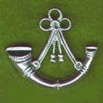

The Oxfordshire and Buckinghamsire Light infantry
"The Armoured Farmers"

The Royal Green Jackets was formed on 1 January 1966 by the amalgamation of the three separate regiments of the Green Jackets Brigade: the 1st Green Jackets (43rd and 52nd), the 2nd Green Jackets, the King's Royal Rifle Corps and the 3rd Green Jackets, the Rifle Brigade (Prince Consort's Own). In 2007, after being reduced to just two battalions, they were merged with the other light infantry regiments in the British Army to become The Rifles.
Click the cap-badges below to learn more of the individual regiments